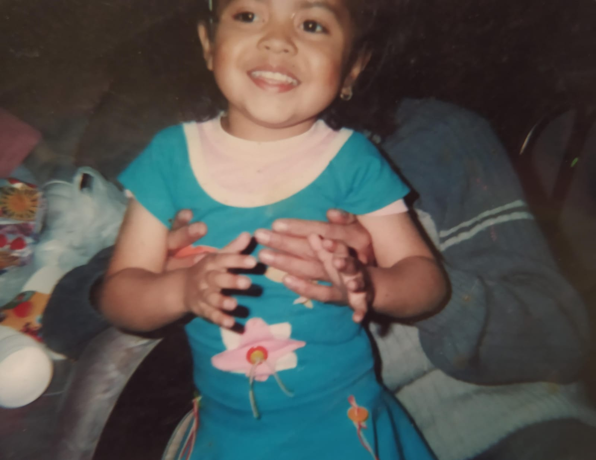
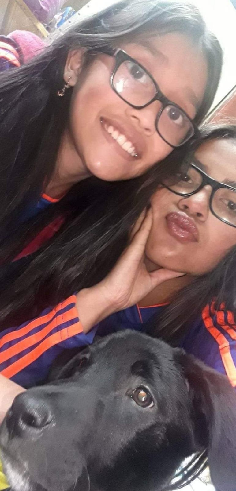
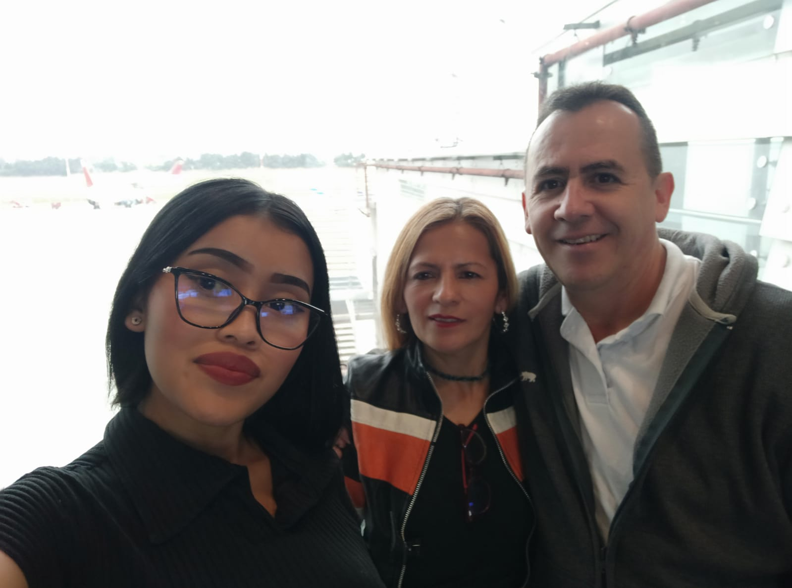

Proyecto de Vida
Mi vida...

Gestacion:
Desde el momento en que vine al mundo, mi vida se convirtió en una lucha constante. Nací prematura, tan frágil y pequeña que cada día era una batalla para mantenerme sana. Mis primeros meses estuvieron marcados por la incertidumbre y el miedo, mientras luchaba contra una serie de problemas de salud que parecían interminables. Cada enfermedad que enfrentaba era un obstáculo más en mi camino, pero también era una lección de fortaleza y determinación. A medida que crecía, aprendí a enfrentar cada desafío con valentía, sabiendo que mi fuerza interior era más grande que cualquier adversidad. A pesar de las dificultades, mi vida estaba llena de amor y apoyo. Mi familia nunca dudó en estar a mi lado, brindándome el cuidado y la atención que necesitaba para superar cada enfermedad. Su amor incondicional me dio la fuerza para seguir adelante, incluso en los momentos más oscuros. Hoy, cada vez que miro hacia atrás en mi vida, veo cómo esas batallas tempranas moldearon la persona que soy. Cada enfermedad superada me hizo más fuerte, más resiliente. Me enseñaron el valor de la vida y la importancia de nunca darme por vencida. Mi nacimiento prematuro pudo haber sido un comienzo difícil, pero también fue el primer capítulo de una historia de determinación y superación. Y aunque el camino fue difícil, estoy agradecida por cada desafío, porque me convirtieron en quien soy hoy: una persona fuerte, valiente y lista para enfrentar cualquier cosa que la vida me depare.
Niñez:
Mi infancia fue un período lleno de cariño y afecto, marcado por el amor incondicional de mi madre y el apoyo constante de mi familia. Crecí rodeado de cuidados y atenciones, disfrutando de momentos felices que se quedaron grabados en mi memoria. Sin embargo, detrás de esa apariencia de felicidad, yacía una realidad más compleja. A pesar del amor que me rodeaba, luchaba con problemas personales que me hacían sentir vulnerable. En medio de la dulzura de la infancia, enfrentaba mis propias batallas internas, lidiando con temores e inseguridades que me abrumaban. A veces, me sentía como si estuviera navegando en aguas turbulentas, tratando de mantenerme a flote mientras las olas de mis preocupaciones amenazaban con hundirme. Esa sensación de vulnerabilidad me perseguía, recordándome que, a pesar del amor que me rodeaba, había partes de mí mismo que necesitaban sanar. Afortunadamente, no estaba solo en este viaje. Mi madre y mi familia continuaron siendo mi roca, ofreciéndome consuelo y apoyo en los momentos difíciles. Su amor incondicional actuaba como un bálsamo para mi alma herida, recordándome que siempre había un refugio seguro en sus brazos. Con el tiempo, aprendí a enfrentar mis problemas personales con valentía y determinación. Descubrí la fortaleza que residía dentro de mí y encontré el coraje para confrontar mis miedos. Aunque la sensación de vulnerabilidad nunca desapareció por completo, aprendí a aceptarla como parte de lo que me hace humano. Mirando hacia atrás, reconozco que mi infancia fue un precioso equilibrio entre la alegría y el dolor, la felicidad y la vulnerabilidad. Cada experiencia, tanto los momentos de dicha como los desafíos personales, contribuyó a formar la persona que soy hoy: alguien que valora el amor y la conexión, pero también reconoce la fuerza que proviene de enfrentar las propias vulnerabilidades.
Preadolescencia:
Mi paso por la pre-adolescencia estuvo marcado por una sensación de desconexión y soledad. A medida que mis compañeros comenzaban a formar amistades y a explorar el mundo social que los rodeaba, yo me encontraba luchando en un mar de dificultades para socializar. La sensación de estar al margen de la multitud, de ser un observador solitario en lugar de un participante activo, se convirtió en mi realidad cotidiana. Las interacciones sociales me resultaban intimidantes y abrumadoras, y mi timidez actuaba como un muro que me separaba del resto del mundo. La falta de amigos cercanos se hizo evidente, y a menudo me encontraba navegando por los pasillos de la escuela en busca de alguien con quien compartir un momento de complicidad. Sin embargo, el rechazo y la incomodidad eran compañeros habituales en mi búsqueda de conexiones significativas. A pesar de la sensación de aislamiento que me envolvía, encontré consuelo en mis propios intereses y pasatiempos. La soledad me brindó la oportunidad de explorar mi creatividad y de sumergirme en mundos de imaginación y fantasía que me transportaban lejos de la realidad que me rodeaba. Con el tiempo, aprendí a aceptar mi dificultad para socializar como parte de mi ser, en lugar de verla como una debilidad. Descubrí la importancia de la autoaceptación y el amor propio, reconociendo que mi valía no estaba determinada por el número de amigos que tenía. Aunque mi pre-adolescencia estuvo marcada por la soledad, también fue un período de autodescubrimiento y crecimiento personal. Aprendí a encontrar la belleza en la tranquilidad de mi propia compañía y a valorar las amistades verdaderas, incluso si eran pocas en número. Mirando hacia atrás, reconozco que mi lucha por socializar durante esos años difíciles me ayudó a forjar mi identidad y a desarrollar la fortaleza interior que necesitaría para enfrentar los desafíos futuros.
Adolescencia:
Mi adolescencia tomó un giro inesperado que cambió el rumbo de mi vida por completo. En el último año de la escuela secundaria, un problema delicado surgió, obligándome a tomar una difícil decisión: retirarme del grado once. Fue un momento de incertidumbre y desafíos, enfrentándome a la perspectiva de comenzar de nuevo. Dejar atrás un año académico completo y enfrentarme a la realidad de tener que repetirlo me llenaba de ansiedad y dudas sobre mi futuro. Sin embargo, a pesar de las dificultades, esa decisión se convirtió en un punto de inflexión en mi vida. Al regresar al aula, me di cuenta de que esta segunda oportunidad no era solo una repetición del pasado, sino una oportunidad para reinventarme y crecer en formas que nunca hubiera imaginado. Con un renovado sentido de determinación, me sumergí en mis estudios y aproveché al máximo cada oportunidad para aprender y crecer. Descubrí nuevas pasiones, desarrollé habilidades que nunca pensé que tendría y formé conexiones significativas con compañeros y maestros. A medida que avanzaba en el año, me di cuenta de que mi retirada del grado once y mi posterior regreso no solo se trataba de superar un obstáculo académico, sino de un viaje de autodescubrimiento y fortalecimiento personal. Aprendí la importancia de la resiliencia y la perseverancia, y descubrí una fuerza dentro de mí que no sabía que existía. Al final, repetir el último año de la escuela secundaria no solo me preparó para el éxito académico, sino que también me equipó con las herramientas y la confianza necesarias para enfrentar los desafíos que la vida me presentara en el futuro. Esa experiencia me enseñó que, a veces, los mayores obstáculos pueden convertirse en las mayores oportunidades de crecimiento y transformación.